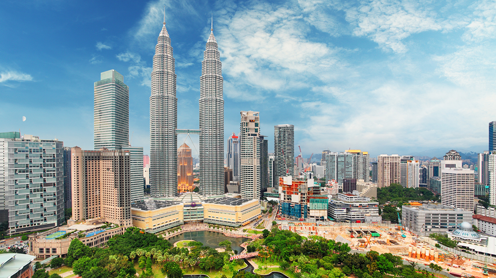
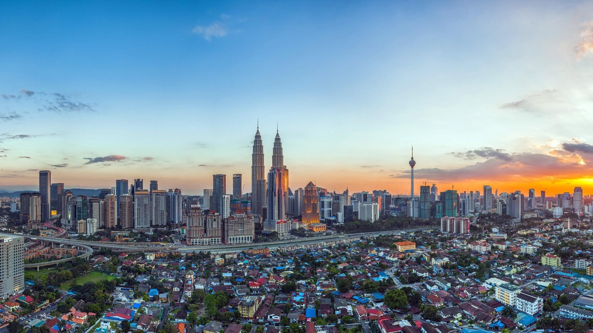

With such an interesting history and so much influence from neighboring Asian countries and colonial rulers, you can expect much diversity in Malaysia – from architecture and religion to ethnicity of the country’s people. No wonder, tourism contributes more than 7% to the economy and the country is ranked 9th in all the world for tourist arrivals! With your expert local guides on hand, tailor your trip specifically to match your interests.
The people of Malaysia are a mosaic of Chinese, Indian and native Malay influence. The Malays make up the largest ethnic group, and tend to practice both Islamic and Malay traditions, and speak in the native Malay language. The Malaysian Chinese make up about 25% of the population, with three main dialects of Chinese languages being spoken: Hokkien, Cantonese and Mandarin speakers. The Malaysian Indians – who make up 10%, tend o be descendants of Tamil-speaking South Indians who were brought in under British colonial rule.
The traditional Malay people speak Bahasa Malaysia, which has its roots in an Austronesian language. The indigenous people of Malay, known as the Orang Asli or original people, are found in the Peninsular region and have several different groups with their own language and cultural traditions. The largest ethnic groups tend to live in Sabah, including the Kadazan Dusuns, who are typically farmers in hilly regions; Bajaus, a seafaring community; and the Murut, who also make their living from hunting, fishing and cultivation.
In Sarawak, you can find major ethnic groups known as Dayaks, the Iban, Bidayuh and Orang Ulu. Meanwhile, the Penang people are traditional nomadic people who move around the rainforest.
Witnessing a local festival is a great way to experience the culture of Malaysia. Most world religions are prevalent in the country including Islam, Christianity, Hinduism and Buddhism. Islam is the largest and official religion of the country. The Penang people used to practice animism although many have converted to Islam or Christianity.
All major festivals from Eid, Chinese New Year, Diwali, and Christmas are celebrated, as are several Malay festivals such as Hari Raya Aidilfitri, and Awal Muharram, as well as state specific festivals such as Sabah Kaamatan Festival and Sarawak Gawai Festival. In addition, the country also hosts several smaller religious festivals, such as the Hindu Thaipusam festival, which includes a procession from the heart of Kuala Lumpur that ends at the Batu Caves to the north of the city.
Architecture
Much of Malaysia’s architecture was influenced by colonial rulers (British, Dutch and Portuguese). Head to George Town and the Sultan Abdul Samad Building in Kuala Lumpur to witness excellent examples of British architecture; and Melaka Town for 17th century Dutch and 16th century Portuguese influences. Chinese architecture can be found in many Chinese temples and heritage homes that date back to the 17th century, especially in Melaka and Penang.
Many modern buildings have Moorish design elements due to Islamic influence and beautiful mosques can be explored throughout the length and breadth of the country. The indigenous communities in Sabah and Sarawak boast wonderful examples of traditional Malay architecture that is constructed on stilts, to ensure houses are cooled and floods are avoided. Some traditional houses can still be seen that were built out of wood without any nails, such as the Old Palace of Seri Menanti in Negeri Sembilan.
Crafts, music and dance
The booming handicrafts industry is influenced by Islam, and much of the designs are influenced by nature. It is easy to purchase pottery, wooden crafts, bronze and brass work in most regions, and you can find everything from traditional silver jewelry to tribal headdresses! The native Orang Ulu are particularly noted for their artistic ability, with wood carvings, murals, and intricate beadwork, as well as spirit sculptures. Handwoven crafts made from local plant fibers, and traditional textiles such as batiks (dyed materials) and songket (woven with gold thread) are offered for everything from designer clothing to simple and colorful homewares.
Our private Malaysia vacations offer a host of opportunities to tourists for enjoying the diverse music and dance of the country. We highly recommend you discover gamelan and the nobat, the two traditional orchestras , as well as the rebana uni drums, the kompang (similar to a tambourine), and the sape, a traditional flute, for enjoying the native music of the region.